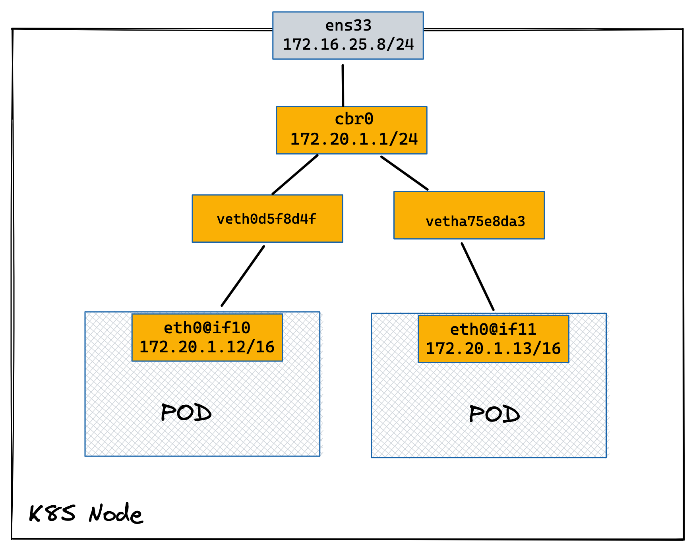
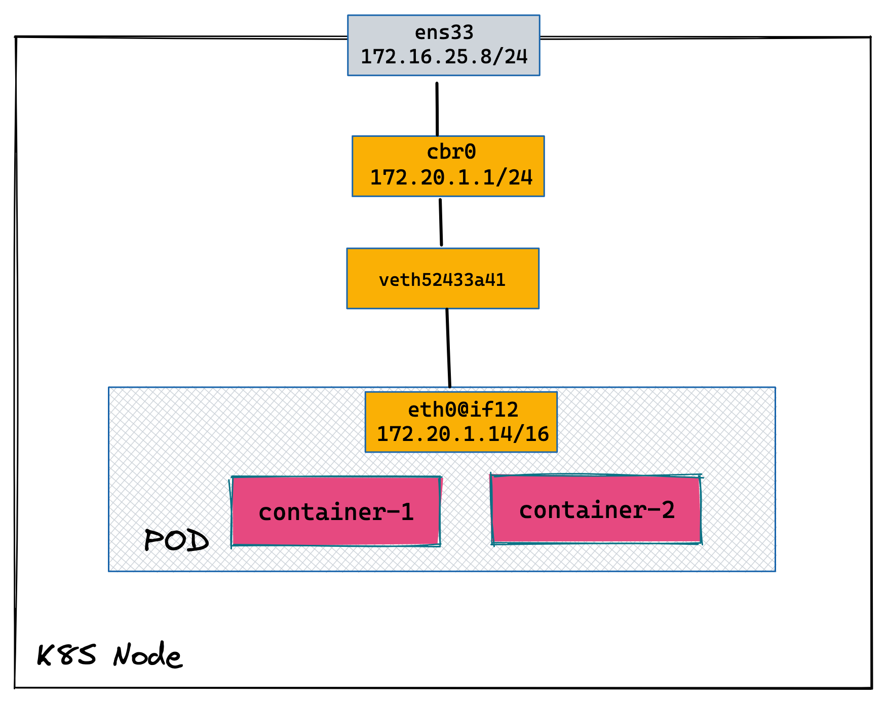

sudo kubeadm init --pod-network-cidr=172.20.0.0/16kubenet
Table of Contents
kubenet 配置
本部分配置两个节点的 K8S 集群，采用原生kubenet网络插件。
1. K8S 安装
2. 查看默认的 network-plugin
$ sudo cat /var/lib/kubelet/kubeadm-flags.env
KUBELET_KUBEADM_ARGS="--network-plugin=cni --pod-infra-container-image=k8s.gcr.io/pause:3.2"3. 修改默认的 cni 网络到 kubenet
sudo sed -i 's/cni/kubenet/' /var/lib/kubelet/kubeadm-flags.env4. 重启 kubelet
sudo systemctl restart kubelet.service5. 验证 kubelet 使用的 network-plugin 为 kubenet
$ ps -ef | grep kubelet
root 771 1 2 15:47 ? 00:00:42 /usr/bin/kubelet --bootstrap-kubeconfig=/etc/kubernetes/bootstrap-kubelet.conf --kubeconfig=/etc/kubernetes/kubelet.conf --config=/var/lib/kubelet/config.yaml --network-plugin=kubenet --pod-infra-container-image=k8s.gcr.io/pause:3.2|
Note
|
以上3、4、5 需要在 K8S 所有节点上执行。 |
6. 查看 nodes
$ kubectl get nodes --no-headers
node-1 Ready control-plane,master 11m v1.22.2
node-2 Ready <none> 8m14s v1.22.27. 查看 Pods
$ kubectl get pods --all-namespaces --no-headers
kube-system coredns-78fcd69978-jv5pw 1/1 Running 0 11m
kube-system coredns-78fcd69978-vg5np 1/1 Running 0 11m
kube-system etcd-node-1 1/1 Running 0 11m
kube-system kube-apiserver-node-1 1/1 Running 0 11m
kube-system kube-controller-manager-node-1 1/1 Running 0 11m
kube-system kube-proxy-6ccgv 1/1 Running 0 8m40s
kube-system kube-proxy-945sc 1/1 Running 0 11m
kube-system kube-scheduler-node-1 1/1 Running 0 11m8. 查看 Linux bridge
$ brctl show
bridge name bridge id STP enabled interfaces
cbr0 8000.dad8ae6cfb7e no veth49ee306d
vethdf6ae0d5
docker0 8000.0242a1768136 noPOD 地址分配与跨节点通信
同节点上两个 POD

1. 创建两个 Pod
kubectl apply -f pods.yaml2. 查看主机网络空间新增加的虚拟网卡
2: ens33: <BROADCAST,MULTICAST,UP,LOWER_UP> mtu 1500 qdisc fq_codel state UP group default qlen 1000
link/ether 00:0c:29:2f:33:85 brd ff:ff:ff:ff:ff:ff
altname enp2s1
inet 172.16.25.8/24 brd 172.16.25.255 scope global noprefixroute ens33
valid_lft forever preferred_lft forever
inet6 fd15:4ba5:5a2b:1008:20c:29ff:fe2f:3385/64 scope global dynamic mngtmpaddr noprefixroute
valid_lft 2591956sec preferred_lft 604756sec
inet6 fe80::20c:29ff:fe2f:3385/64 scope link noprefixroute
valid_lft forever preferred_lft forever
4: cbr0: <BROADCAST,MULTICAST,PROMISC,UP,LOWER_UP> mtu 1500 qdisc htb state UP group default qlen 1000
link/ether ee:a9:21:aa:a0:b7 brd ff:ff:ff:ff:ff:ff
inet 172.20.1.1/24 brd 172.20.1.255 scope global cbr0
valid_lft forever preferred_lft forever
inet6 fe80::eca9:21ff:feaa:a0b7/64 scope link
valid_lft forever preferred_lft forever
10: veth0d5f8d4f@if3: <BROADCAST,MULTICAST,UP,LOWER_UP> mtu 1500 qdisc noqueue master cbr0 state UP group default
link/ether 52:3d:bb:26:df:88 brd ff:ff:ff:ff:ff:ff link-netnsid 0
inet6 fe80::503d:bbff:fe26:df88/64 scope link
valid_lft forever preferred_lft forever
11: vetha75e8da3@if3: <BROADCAST,MULTICAST,UP,LOWER_UP> mtu 1500 qdisc noqueue master cbr0 state UP group default
link/ether 3e:f4:7c:9f:d5:70 brd ff:ff:ff:ff:ff:ff link-netnsid 2
inet6 fe80::3cf4:7cff:fe9f:d570/64 scope link
valid_lft forever preferred_lft forever3. 查看 POD 1 容器网络
$ kubectl exec -it test-1 -- sh
/ # ip a
1: lo: <LOOPBACK,UP,LOWER_UP> mtu 65536 qdisc noqueue qlen 1000
link/loopback 00:00:00:00:00:00 brd 00:00:00:00:00:00
inet 127.0.0.1/8 scope host lo
valid_lft forever preferred_lft forever
3: eth0@if10: <BROADCAST,MULTICAST,UP,LOWER_UP,M-DOWN> mtu 1500 qdisc noqueue
link/ether d6:ab:c6:56:b5:1f brd ff:ff:ff:ff:ff:ff
inet 172.20.1.12/24 brd 172.20.1.255 scope global eth0
valid_lft forever preferred_lft forever4. 查看 POD 2 容器网络
$ kubectl exec -it test-2 -- sh
/ # ip a
1: lo: <LOOPBACK,UP,LOWER_UP> mtu 65536 qdisc noqueue qlen 1000
link/loopback 00:00:00:00:00:00 brd 00:00:00:00:00:00
inet 127.0.0.1/8 scope host lo
valid_lft forever preferred_lft forever
3: eth0@if11: <BROADCAST,MULTICAST,UP,LOWER_UP,M-DOWN> mtu 1500 qdisc noqueue
link/ether 46:00:fb:b4:05:9a brd ff:ff:ff:ff:ff:ff
inet 172.20.1.13/24 brd 172.20.1.255 scope global eth0
valid_lft forever preferred_lft forever5. Clean up
kubectl delete -f pods.yamlPod 内多容器下地址分配

1. 创建多容器 Pod
kubectl apply -f pod.yaml2. 查看主机网络空间新增加的虚拟网卡
2: ens33: <BROADCAST,MULTICAST,UP,LOWER_UP> mtu 1500 qdisc fq_codel state UP group default qlen 1000
link/ether 00:0c:29:2f:33:85 brd ff:ff:ff:ff:ff:ff
altname enp2s1
inet 172.16.25.8/24 brd 172.16.25.255 scope global noprefixroute ens33
valid_lft forever preferred_lft forever
inet6 fd15:4ba5:5a2b:1008:20c:29ff:fe2f:3385/64 scope global dynamic mngtmpaddr noprefixroute
valid_lft 2591956sec preferred_lft 604756sec
inet6 fe80::20c:29ff:fe2f:3385/64 scope link noprefixroute
valid_lft forever preferred_lft forever
4: cbr0: <BROADCAST,MULTICAST,PROMISC,UP,LOWER_UP> mtu 1500 qdisc htb state UP group default qlen 1000
link/ether ee:a9:21:aa:a0:b7 brd ff:ff:ff:ff:ff:ff
inet 172.20.1.1/24 brd 172.20.1.255 scope global cbr0
valid_lft forever preferred_lft forever
inet6 fe80::eca9:21ff:feaa:a0b7/64 scope link
valid_lft forever preferred_lft forever
12: veth52433a41@if3: <BROADCAST,MULTICAST,UP,LOWER_UP> mtu 1500 qdisc noqueue master cbr0 state UP group default
link/ether 96:0a:2d:ac:36:23 brd ff:ff:ff:ff:ff:ff link-netnsid 0
inet6 fe80::940a:2dff:feac:3623/64 scope link
valid_lft forever preferred_lft forever3. 登录 container-1 查看容器网络
$ kubectl exec -it test -c container-1 -- sh
/ # ip a
1: lo: <LOOPBACK,UP,LOWER_UP> mtu 65536 qdisc noqueue qlen 1000
link/loopback 00:00:00:00:00:00 brd 00:00:00:00:00:00
inet 127.0.0.1/8 scope host lo
valid_lft forever preferred_lft forever
3: eth0@if12: <BROADCAST,MULTICAST,UP,LOWER_UP,M-DOWN> mtu 1500 qdisc noqueue
link/ether c2:db:5c:ba:05:45 brd ff:ff:ff:ff:ff:ff
inet 172.20.1.14/24 brd 172.20.1.255 scope global eth0
valid_lft forever preferred_lft forever4. 登录 container-2 查看容器网络
$ kubectl exec -it test -c container-2 -- sh
/ # ip a
1: lo: <LOOPBACK,UP,LOWER_UP> mtu 65536 qdisc noqueue qlen 1000
link/loopback 00:00:00:00:00:00 brd 00:00:00:00:00:00
inet 127.0.0.1/8 scope host lo
valid_lft forever preferred_lft forever
3: eth0@if12: <BROADCAST,MULTICAST,UP,LOWER_UP,M-DOWN> mtu 1500 qdisc noqueue
link/ether c2:db:5c:ba:05:45 brd ff:ff:ff:ff:ff:ff
inet 172.20.1.14/24 brd 172.20.1.255 scope global eth0
valid_lft forever preferred_lft forever5. 删除 test
kubectl delete -f pod.yaml跨 NODE POD 通信

1. 创建两个 POD
kubectl apply -f deployment.yaml2. 查看 POD 1 网络
$ kubectl exec -it test-1 -- sh
/ # ip a
1: lo: <LOOPBACK,UP,LOWER_UP> mtu 65536 qdisc noqueue qlen 1000
link/loopback 00:00:00:00:00:00 brd 00:00:00:00:00:00
inet 127.0.0.1/8 scope host lo
valid_lft forever preferred_lft forever
3: eth0@if6: <BROADCAST,MULTICAST,UP,LOWER_UP,M-DOWN> mtu 1500 qdisc noqueue
link/ether f2:e4:2e:8e:04:cd brd ff:ff:ff:ff:ff:ff
inet 172.20.0.5/24 brd 172.20.0.255 scope global eth0
valid_lft forever preferred_lft forever3. 查看 POD 2 网络
$ kubectl exec -it test-2 -- sh
/ # ip a
1: lo: <LOOPBACK,UP,LOWER_UP> mtu 65536 qdisc noqueue qlen 1000
link/loopback 00:00:00:00:00:00 brd 00:00:00:00:00:00
inet 127.0.0.1/8 scope host lo
valid_lft forever preferred_lft forever
3: eth0@if13: <BROADCAST,MULTICAST,UP,LOWER_UP,M-DOWN> mtu 1500 qdisc noqueue
link/ether ea:c3:e1:9b:83:40 brd ff:ff:ff:ff:ff:ff
inet 172.20.1.15/24 brd 172.20.1.255 scope global eth0
valid_lft forever preferred_lft forever4. node2 上 tcpdump 捕获 icmp 包
sudo tcpdump -nni cbr0 icmp5. 在 POD 1 ping POD 2
ping 172.20.1.156. Clean Up
kubectl delete -f deployment.yamlK8S Service
Cluster IP 类型 Service
1. 查看 Service IP 段
$ ps -ef | grep apiserver | grep service-cluster-ip-range
root 5626 5597 4 20:43 ? 00:06:25 kube-apiserver --advertise-address=10.1.10.9 --allow-privileged=true --authorization-mode=Node,RBAC --client-ca-file=/etc/kubernetes/pki/ca.crt --enable-admission-plugins=NodeRestriction --enable-bootstrap-token-auth=true --etcd-cafile=/etc/kubernetes/pki/etcd/ca.crt --etcd-certfile=/etc/kubernetes/pki/apiserver-etcd-client.crt --etcd-keyfile=/etc/kubernetes/pki/apiserver-etcd-client.key --etcd-servers=https://127.0.0.1:2379 --insecure-port=0 --kubelet-client-certificate=/etc/kubernetes/pki/apiserver-kubelet-client.crt --kubelet-client-key=/etc/kubernetes/pki/apiserver-kubelet-client.key --kubelet-preferred-address-types=InternalIP,ExternalIP,Hostname --proxy-client-cert-file=/etc/kubernetes/pki/front-proxy-client.crt --proxy-client-key-file=/etc/kubernetes/pki/front-proxy-client.key --requestheader-allowed-names=front-proxy-client --requestheader-client-ca-file=/etc/kubernetes/pki/front-proxy-ca.crt --requestheader-extra-headers-prefix=X-Remote-Extra- --requestheader-group-headers=X-Remote-Group --requestheader-username-headers=X-Remote-User --secure-port=6443 --service-account-issuer=https://kubernetes.default.svc.cluster.local --service-account-key-file=/etc/kubernetes/pki/sa.pub --service-account-signing-key-file=/etc/kubernetes/pki/sa.key --service-cluster-ip-range=10.96.0.0/12 --tls-cert-file=/etc/kubernetes/pki/apiserver.crt --tls-private-key-file=/etc/kubernetes/pki/apiserver.key|
Note
|
--service-cluster-ip-range=10.96.0.0/12.
|
2. 创建 Service
kubectl apply -f service.yaml3. 查看创建的 POD 名称
$ kubectl get pods --no-headers | awk '{print $1}'
test-service-6f6f8db499-ntkcc
test-service-6f6f8db499-s2dwn4. 查看 Service IP
$ kubectl get svc test-service --no-headers | awk '{print $3}'
10.107.168.725. 访问服务
$ for i in {1..5} ; do curl 10.107.168.72 ; done
test-service-6f6f8db499-s2dwn
test-service-6f6f8db499-ntkcc
test-service-6f6f8db499-s2dwn
test-service-6f6f8db499-ntkcc
test-service-6f6f8db499-s2dwn6. 添加一条 iptables 规则，方向 POD 访问 Service
sudo iptables -I FORWARD 2 -j ACCEPT7. 创建一个临时 POD，访问测试
$ kubectl run -it --rm --restart=Never busybox --image=busybox sh
If you don't see a command prompt, try pressing enter.
/ # wget -S -O - 10.107.168.72
/ # wget -S -O - 192.168.0.20:9376Cluster IP 类型 Service 访问调试
1. 创建服务
kubectl apply -f echoserver.yaml2. 查看 SERVICE 及 POD IP
$ kubectl get svc echoserver --no-headers
echoserver ClusterIP 10.106.23.233 <none> 8877/TCP 45s
$ kubectl get pods -o wide --no-headers
echoserver-6dbbc8d5fc-f455t 1/1 Running 0 3m24s 192.168.0.33 node-1 <none> <none>
echoserver-6dbbc8d5fc-n4smh 1/1 Running 0 3m24s 192.168.0.34 node-1 <none> <none>3. nat 表中 PREROUTING 规则
$ sudo iptables -t nat -vnL PREROUTING
Chain PREROUTING (policy ACCEPT 338 packets, 15210 bytes)
pkts bytes target prot opt in out source destination
521 24674 KUBE-SERVICES all -- * * 0.0.0.0/0 0.0.0.0/0 /* kubernetes service portals */
2 128 DOCKER all -- * * 0.0.0.0/0 0.0.0.0/0 ADDRTYPE match dst-type LOCAL4. nat 表中 KUBE-SERVICES 规则
$ sudo iptables -t nat -vnL KUBE-SERVICES
Chain KUBE-SERVICES (2 references)
pkts bytes target prot opt in out source destination
0 0 KUBE-MARK-MASQ tcp -- * * !192.168.0.0/16 10.96.0.1 /* default/kubernetes:https cluster IP */ tcp dpt:443
0 0 KUBE-SVC-NPX46M4PTMTKRN6Y tcp -- * * 0.0.0.0/0 10.96.0.1 /* default/kubernetes:https cluster IP */ tcp dpt:443
0 0 KUBE-MARK-MASQ tcp -- * * !192.168.0.0/16 10.96.0.10 /* kube-system/kube-dns:metrics cluster IP */ tcp dpt:9153
0 0 KUBE-SVC-JD5MR3NA4I4DYORP tcp -- * * 0.0.0.0/0 10.96.0.10 /* kube-system/kube-dns:metrics cluster IP */ tcp dpt:9153
0 0 KUBE-MARK-MASQ udp -- * * !192.168.0.0/16 10.96.0.10 /* kube-system/kube-dns:dns cluster IP */ udp dpt:53
0 0 KUBE-SVC-TCOU7JCQXEZGVUNU udp -- * * 0.0.0.0/0 10.96.0.10 /* kube-system/kube-dns:dns cluster IP */ udp dpt:53
0 0 KUBE-MARK-MASQ tcp -- * * !192.168.0.0/16 10.96.0.10 /* kube-system/kube-dns:dns-tcp cluster IP */ tcp dpt:53
0 0 KUBE-SVC-ERIFXISQEP7F7OF4 tcp -- * * 0.0.0.0/0 10.96.0.10 /* kube-system/kube-dns:dns-tcp cluster IP */ tcp dpt:53
0 0 KUBE-MARK-MASQ tcp -- * * !192.168.0.0/16 10.106.23.233 /* default/echoserver cluster IP */ tcp dpt:8877
0 0 KUBE-SVC-HOYURHXRFA5BUYEO tcp -- * * 0.0.0.0/0 10.106.23.233 /* default/echoserver cluster IP */ tcp dpt:8877
537 31690 KUBE-NODEPORTS all -- * * 0.0.0.0/0 0.0.0.0/0 /* kubernetes service nodeports; NOTE: this must be the last rule in this chain */ ADDRTYPE match dst-type LOCAL
$ sudo iptables -t nat -vnL KUBE-SERVICES | grep 10.106.23.233
0 0 KUBE-MARK-MASQ tcp -- * * !192.168.0.0/16 10.106.23.233 /* default/echoserver cluster IP */ tcp dpt:8877
0 0 KUBE-SVC-HOYURHXRFA5BUYEO tcp -- * * 0.0.0.0/0 10.106.23.233 /* default/echoserver cluster IP */ tcp dpt:88775. nat 表中 KUBE-SVC- 规则
$ sudo iptables -t nat -vnL KUBE-SVC-HOYURHXRFA5BUYEO
Chain KUBE-SVC-HOYURHXRFA5BUYEO (1 references)
pkts bytes target prot opt in out source destination
0 0 KUBE-SEP-652URVIXIJWATNFG all -- * * 0.0.0.0/0 0.0.0.0/0 /* default/echoserver */ statistic mode random probability 0.50000000000
0 0 KUBE-SEP-ASOAWBDFEODJJPJH all -- * * 0.0.0.0/0 0.0.0.0/0 /* default/echoserver */6. nat 表中 KUBE-SEP- 规则
$ sudo iptables -t nat -vnL KUBE-SEP-652URVIXIJWATNFG
Chain KUBE-SEP-652URVIXIJWATNFG (1 references)
pkts bytes target prot opt in out source destination
0 0 KUBE-MARK-MASQ all -- * * 192.168.0.33 0.0.0.0/0 /* default/echoserver */
0 0 DNAT tcp -- * * 0.0.0.0/0 0.0.0.0/0 /* default/echoserver */ tcp to:192.168.0.33:8877
$ sudo iptables -t nat -vnL KUBE-SEP-ASOAWBDFEODJJPJH
Chain KUBE-SEP-ASOAWBDFEODJJPJH (1 references)
pkts bytes target prot opt in out source destination
0 0 KUBE-MARK-MASQ all -- * * 192.168.0.34 0.0.0.0/0 /* default/echoserver */
0 0 DNAT tcp -- * * 0.0.0.0/0 0.0.0.0/0 /* default/echoserver */ tcp to:192.168.0.34:88777. 调整 echoserver 为 3 replicas
$ kubectl get pod -o wide --no-headers
echoserver-6dbbc8d5fc-hqxdv 1/1 Running 0 13m 192.168.0.33 node-1 <none> <none>
echoserver-6dbbc8d5fc-kj27r 1/1 Running 0 13m 192.168.0.34 node-1 <none> <none>
echoserver-6dbbc8d5fc-tgj24 1/1 Running 0 6s 192.168.0.35 node-1 <none> <none>8. nat 表中 KUBE-SVC- 规则
$ sudo iptables -t nat -vnL KUBE-SVC-HOYURHXRFA5BUYEO
Chain KUBE-SVC-HOYURHXRFA5BUYEO (1 references)
pkts bytes target prot opt in out source destination
0 0 KUBE-SEP-652URVIXIJWATNFG all -- * * 0.0.0.0/0 0.0.0.0/0 /* default/echoserver */ statistic mode random probability 0.33333333349
0 0 KUBE-SEP-ASOAWBDFEODJJPJH all -- * * 0.0.0.0/0 0.0.0.0/0 /* default/echoserver */ statistic mode random probability 0.50000000000
0 0 KUBE-SEP-7ZRSXHFJXB4D6W3U all -- * * 0.0.0.0/0 0.0.0.0/0 /* default/echoserver */9. nat 表中 KUBE-SEP- 规则（新增）
$ sudo iptables -t nat -vnL KUBE-SEP-7ZRSXHFJXB4D6W3U
Chain KUBE-SEP-7ZRSXHFJXB4D6W3U (1 references)
pkts bytes target prot opt in out source destination
0 0 KUBE-MARK-MASQ all -- * * 192.168.0.35 0.0.0.0/0 /* default/echoserver */
0 0 DNAT tcp -- * * 0.0.0.0/0 0.0.0.0/0 /* default/echoserver */ tcp to:192.168.0.35:8877基于 ClientIP 类型的 Service
1. 创建 Service
kubectl apply -f clientip.yaml2. 查看 Service 和 POD IP
$ kubectl get svc test-clientip --no-headers
test-clientip ClusterIP 10.107.215.65 <none> 80/TCP 7h26m
$ kubectl get pods -o wide --no-headers
test-clientip-55c6c8ddcd-2ntlk 1/1 Running 0 7h27m 192.168.0.37 node-1 <none> <none>
test-clientip-55c6c8ddcd-ktlxt 1/1 Running 0 7h27m 192.168.0.36 node-1 <none> <none>3. 访问服务
$ for i in {1..5} ; do curl 10.107.215.65 ; done
test-clientip-55c6c8ddcd-2ntlk
test-clientip-55c6c8ddcd-2ntlk
test-clientip-55c6c8ddcd-2ntlk
test-clientip-55c6c8ddcd-2ntlk
test-clientip-55c6c8ddcd-2ntlk4. nat 表中 PREROUTING 规则
$ sudo iptables -t nat -vnL PREROUTING
Chain PREROUTING (policy ACCEPT 612 packets, 27540 bytes)
pkts bytes target prot opt in out source destination
3258 149K KUBE-SERVICES all -- * * 0.0.0.0/0 0.0.0.0/0 /* kubernetes service portals */
2 128 DOCKER all -- * * 0.0.0.0/0 0.0.0.0/0 ADDRTYPE match dst-type LOCAL5. nat 表中 KUBE-SERVICES 规则
$ sudo iptables -t nat -vnL KUBE-SERVICES
Chain KUBE-SERVICES (2 references)
pkts bytes target prot opt in out source destination
0 0 KUBE-MARK-MASQ tcp -- * * !192.168.0.0/16 10.96.0.1 /* default/kubernetes:https cluster IP */ tcp dpt:443
0 0 KUBE-SVC-NPX46M4PTMTKRN6Y tcp -- * * 0.0.0.0/0 10.96.0.1 /* default/kubernetes:https cluster IP */ tcp dpt:443
0 0 KUBE-MARK-MASQ tcp -- * * !192.168.0.0/16 10.96.0.10 /* kube-system/kube-dns:metrics cluster IP */ tcp dpt:9153
0 0 KUBE-SVC-JD5MR3NA4I4DYORP tcp -- * * 0.0.0.0/0 10.96.0.10 /* kube-system/kube-dns:metrics cluster IP */ tcp dpt:9153
0 0 KUBE-MARK-MASQ udp -- * * !192.168.0.0/16 10.96.0.10 /* kube-system/kube-dns:dns cluster IP */ udp dpt:53
0 0 KUBE-SVC-TCOU7JCQXEZGVUNU udp -- * * 0.0.0.0/0 10.96.0.10 /* kube-system/kube-dns:dns cluster IP */ udp dpt:53
0 0 KUBE-MARK-MASQ tcp -- * * !192.168.0.0/16 10.96.0.10 /* kube-system/kube-dns:dns-tcp cluster IP */ tcp dpt:53
0 0 KUBE-SVC-ERIFXISQEP7F7OF4 tcp -- * * 0.0.0.0/0 10.96.0.10 /* kube-system/kube-dns:dns-tcp cluster IP */ tcp dpt:53
8 480 KUBE-MARK-MASQ tcp -- * * !192.168.0.0/16 10.107.215.65 /* default/test-clientip cluster IP */ tcp dpt:80
8 480 KUBE-SVC-JASYFCTGROL6PGNE tcp -- * * 0.0.0.0/0 10.107.215.65 /* default/test-clientip cluster IP */ tcp dpt:80
814 48164 KUBE-NODEPORTS all -- * * 0.0.0.0/0 0.0.0.0/0 /* kubernetes service nodeports; NOTE: this must be the last rule in this chain */ ADDRTYPE match dst-type LOCAL
$ sudo iptables -t nat -vnL KUBE-SERVICES | grep 10.107.215.65
8 480 KUBE-MARK-MASQ tcp -- * * !192.168.0.0/16 10.107.215.65 /* default/test-clientip cluster IP */ tcp dpt:80
8 480 KUBE-SVC-JASYFCTGROL6PGNE tcp -- * * 0.0.0.0/0 10.107.215.65 /* default/test-clientip cluster IP */ tcp dpt:806. nat 表中 KUBE-SVC- 规则（recent: CHECK seconds: 10800 reap name: KUBE-SEP-2WE6A5EBAO3UGN4N side: source mask: 255.255.255.255）
$ sudo iptables -t nat -vnL KUBE-SVC-JASYFCTGROL6PGNE
Chain KUBE-SVC-JASYFCTGROL6PGNE (1 references)
pkts bytes target prot opt in out source destination
0 0 KUBE-SEP-2WE6A5EBAO3UGN4N all -- * * 0.0.0.0/0 0.0.0.0/0 /* default/test-clientip */ recent: CHECK seconds: 10800 reap name: KUBE-SEP-2WE6A5EBAO3UGN4N side: source mask: 255.255.255.255
7 420 KUBE-SEP-LXKS3SWKA3X476YD all -- * * 0.0.0.0/0 0.0.0.0/0 /* default/test-clientip */ recent: CHECK seconds: 10800 reap name: KUBE-SEP-LXKS3SWKA3X476YD side: source mask: 255.255.255.255
0 0 KUBE-SEP-2WE6A5EBAO3UGN4N all -- * * 0.0.0.0/0 0.0.0.0/0 /* default/test-clientip */ statistic mode random probability 0.50000000000
1 60 KUBE-SEP-LXKS3SWKA3X476YD all -- * * 0.0.0.0/0 0.0.0.0/0 /* default/test-clientip */7. nat 表中 KUBE-SEP- 规则
$ sudo iptables -t nat -vnL KUBE-SEP-2WE6A5EBAO3UGN4N
Chain KUBE-SEP-2WE6A5EBAO3UGN4N (2 references)
pkts bytes target prot opt in out source destination
0 0 KUBE-MARK-MASQ all -- * * 192.168.0.36 0.0.0.0/0 /* default/test-clientip */
0 0 DNAT tcp -- * * 0.0.0.0/0 0.0.0.0/0 /* default/test-clientip */ recent: SET name: KUBE-SEP-2WE6A5EBAO3UGN4N side: source mask: 255.255.255.255 tcp to:192.168.0.36:9376
$ sudo iptables -t nat -vnL KUBE-SEP-LXKS3SWKA3X476YD
Chain KUBE-SEP-LXKS3SWKA3X476YD (2 references)
pkts bytes target prot opt in out source destination
0 0 KUBE-MARK-MASQ all -- * * 192.168.0.37 0.0.0.0/0 /* default/test-clientip */
8 480 DNAT tcp -- * * 0.0.0.0/0 0.0.0.0/0 /* default/test-clientip */ recent: SET name: KUBE-SEP-LXKS3SWKA3X476YD side: source mask: 255.255.255.255 tcp to:192.168.0.37:9376通过路由表向外网发布 Cluster IP 类型 Service
1. 创建 Service
kubectl apply -f service.yaml2. 查看 Node IP, Service IP，Pod IP
$ kubectl get node -o wide --no-headers
node-1 Ready control-plane,master 15h v1.20.5 10.1.10.9 <none> Ubuntu 18.04 LTS 4.15.0-140-generic docker://20.10.3
$ kubectl get svc test-service --no-headers
test-service ClusterIP 10.106.235.190 <none> 80/TCP 112s
$ kubectl get pods -o wide --no-headers
test-service-6f6f8db499-6j7nm 1/1 Running 0 2m24s 192.168.0.38 node-1 <none> <none>
test-service-6f6f8db499-m8lsx 1/1 Running 0 2m24s 192.168.0.39 node-1 <none> <none>3. 查看 Service 网络
$ ps -ef | grep kubelet | grep service-cluster-ip-range
root 2582 2554 4 08:26 ? 00:03:03 kube-apiserver --advertise-address=10.1.10.9 --allow-privileged=true --authorization-mode=Node,RBAC --client-ca-file=/etc/kubernetes/pki/ca.crt --enable-admission-plugins=NodeRestriction --enable-bootstrap-token-auth=true --etcd-cafile=/etc/kubernetes/pki/etcd/ca.crt --etcd-certfile=/etc/kubernetes/pki/apiserver-etcd-client.crt --etcd-keyfile=/etc/kubernetes/pki/apiserver-etcd-client.key --etcd-servers=https://127.0.0.1:2379 --insecure-port=0 --kubelet-client-certificate=/etc/kubernetes/pki/apiserver-kubelet-client.crt --kubelet-client-key=/etc/kubernetes/pki/apiserver-kubelet-client.key --kubelet-preferred-address-types=InternalIP,ExternalIP,Hostname --proxy-client-cert-file=/etc/kubernetes/pki/front-proxy-client.crt --proxy-client-key-file=/etc/kubernetes/pki/front-proxy-client.key --requestheader-allowed-names=front-proxy-client --requestheader-client-ca-file=/etc/kubernetes/pki/front-proxy-ca.crt --requestheader-extra-headers-prefix=X-Remote-Extra- --requestheader-group-headers=X-Remote-Group --requestheader-username-headers=X-Remote-User --secure-port=6443 --service-account-issuer=https://kubernetes.default.svc.cluster.local --service-account-key-file=/etc/kubernetes/pki/sa.pub --service-account-signing-key-file=/etc/kubernetes/pki/sa.key --service-cluster-ip-range=10.96.0.0/12 --tls-cert-file=/etc/kubernetes/pki/apiserver.crt --tls-private-key-file=/etc/kubernetes/pki/apiserver.key4. 在 10.1.10.8 上配置路由
# ip r
default via 10.1.10.2 dev ens33 proto static metric 100
10.1.10.0/24 dev ens33 proto kernel scope link src 10.1.10.8 metric 100
# ip route add 10.96.0.0/12 via 10.1.10.9
# ip r
default via 10.1.10.2 dev ens33 proto static metric 100
10.1.10.0/24 dev ens33 proto kernel scope link src 10.1.10.8 metric 100
10.96.0.0/12 via 10.1.10.9 dev ens335. 在 10.1.10.8 上访问 test-service
curl 10.106.235.190通过 External IP 向外网发布 Cluster IP 类型 Service
1. 创建一个 External IP Service
kubectl apply -f externalip.yaml2. 查看创建的 Service
$ kubectl get svc test-externalip
NAME TYPE CLUSTER-IP EXTERNAL-IP PORT(S) AGE
test-externalip ClusterIP 10.97.132.81 10.1.10.9 80/TCP 101s3. 通过 EXTERNAL-IP 访问服务
$ for i in {1..5} ; do curl 10.1.10.9 ; done
test-externalip-8fc497f8-jncpv
test-externalip-8fc497f8-jncpv
test-externalip-8fc497f8-phldw
test-externalip-8fc497f8-phldw
test-externalip-8fc497f8-phldw4. nat 表中 PREROUTING 规则
$ sudo iptables -t nat -vnL PREROUTING
Chain PREROUTING (policy ACCEPT 1165 packets, 52425 bytes)
pkts bytes target prot opt in out source destination
8114 369K KUBE-SERVICES all -- * * 0.0.0.0/0 0.0.0.0/0 /* kubernetes service portals */
4 296 DOCKER all -- * * 0.0.0.0/0 0.0.0.0/0 ADDRTYPE match dst-type LOCAL5. nat 表中 KUBE-SERVICES 规则（新增加了两条规则）
$ sudo iptables -t nat -vnL KUBE-SERVICES
Chain KUBE-SERVICES (2 references)
pkts bytes target prot opt in out source destination
0 0 KUBE-MARK-MASQ tcp -- * * !192.168.0.0/16 10.96.0.10 /* kube-system/kube-dns:metrics cluster IP */ tcp dpt:9153
0 0 KUBE-SVC-JD5MR3NA4I4DYORP tcp -- * * 0.0.0.0/0 10.96.0.10 /* kube-system/kube-dns:metrics cluster IP */ tcp dpt:9153
0 0 KUBE-MARK-MASQ udp -- * * !192.168.0.0/16 10.96.0.10 /* kube-system/kube-dns:dns cluster IP */ udp dpt:53
0 0 KUBE-SVC-TCOU7JCQXEZGVUNU udp -- * * 0.0.0.0/0 10.96.0.10 /* kube-system/kube-dns:dns cluster IP */ udp dpt:53
0 0 KUBE-MARK-MASQ tcp -- * * !192.168.0.0/16 10.96.0.10 /* kube-system/kube-dns:dns-tcp cluster IP */ tcp dpt:53
0 0 KUBE-SVC-ERIFXISQEP7F7OF4 tcp -- * * 0.0.0.0/0 10.96.0.10 /* kube-system/kube-dns:dns-tcp cluster IP */ tcp dpt:53
0 0 KUBE-MARK-MASQ tcp -- * * !192.168.0.0/16 10.97.132.81 /* default/test-externalip cluster IP */ tcp dpt:80
0 0 KUBE-SVC-CITWPFL6QQOR27AK tcp -- * * 0.0.0.0/0 10.97.132.81 /* default/test-externalip cluster IP */ tcp dpt:80
27 1700 KUBE-MARK-MASQ tcp -- * * 0.0.0.0/0 10.1.10.9 /* default/test-externalip external IP */ tcp dpt:80
20 1280 KUBE-SVC-CITWPFL6QQOR27AK tcp -- * * 0.0.0.0/0 10.1.10.9 /* default/test-externalip external IP */ tcp dpt:80 PHYSDEV match ! --physdev-is-in ADDRTYPE match src-type !LOCAL
7 420 KUBE-SVC-CITWPFL6QQOR27AK tcp -- * * 0.0.0.0/0 10.1.10.9 /* default/test-externalip external IP */ tcp dpt:80 ADDRTYPE match dst-type LOCAL
0 0 KUBE-MARK-MASQ tcp -- * * !192.168.0.0/16 10.96.0.1 /* default/kubernetes:https cluster IP */ tcp dpt:443
0 0 KUBE-SVC-NPX46M4PTMTKRN6Y tcp -- * * 0.0.0.0/0 10.96.0.1 /* default/kubernetes:https cluster IP */ tcp dpt:443
1429 84328 KUBE-NODEPORTS all -- * * 0.0.0.0/0 0.0.0.0/0 /* kubernetes service nodeports; NOTE: this must be the last rule in this chain */ ADDRTYPE match dst-type LOCAL
$ sudo iptables -t nat -vnL KUBE-SERVICES | grep 10.97.132.81
0 0 KUBE-MARK-MASQ tcp -- * * !192.168.0.0/16 10.97.132.81 /* default/test-externalip cluster IP */ tcp dpt:80
0 0 KUBE-SVC-CITWPFL6QQOR27AK tcp -- * * 0.0.0.0/0 10.97.132.81 /* default/test-externalip cluster IP */ tcp dpt:80
$ sudo iptables -t nat -vnL KUBE-SERVICES | grep 10.1.10.9
27 1700 KUBE-MARK-MASQ tcp -- * * 0.0.0.0/0 10.1.10.9 /* default/test-externalip external IP */ tcp dpt:80
20 1280 KUBE-SVC-CITWPFL6QQOR27AK tcp -- * * 0.0.0.0/0 10.1.10.9 /* default/test-externalip external IP */ tcp dpt:80 PHYSDEV match ! --physdev-is-in ADDRTYPE match src-type !LOCAL
7 420 KUBE-SVC-CITWPFL6QQOR27AK tcp -- * * 0.0.0.0/0 10.1.10.9 /* default/test-externalip external IP */ tcp dpt:80 ADDRTYPE match dst-type LOCAL6. nat 表中 KUBE-SVC- 规则
$ sudo iptables -t nat -vnL KUBE-SVC-CITWPFL6QQOR27AK
Chain KUBE-SVC-CITWPFL6QQOR27AK (3 references)
pkts bytes target prot opt in out source destination
14 884 KUBE-SEP-RRILQQHBGE5IMDI4 all -- * * 0.0.0.0/0 0.0.0.0/0 /* default/test-externalip */ statistic mode random probability 0.50000000000
13 816 KUBE-SEP-JRIE3IXDMRY6BNG5 all -- * * 0.0.0.0/0 0.0.0.0/0 /* default/test-externalip */7. nat 表中 KUBE-SEP- 规则
$ sudo iptables -t nat -vnL KUBE-SEP-RRILQQHBGE5IMDI4
Chain KUBE-SEP-RRILQQHBGE5IMDI4 (1 references)
pkts bytes target prot opt in out source destination
0 0 KUBE-MARK-MASQ all -- * * 192.168.0.40 0.0.0.0/0 /* default/test-externalip */
14 884 DNAT tcp -- * * 0.0.0.0/0 0.0.0.0/0 /* default/test-externalip */ tcp to:192.168.0.40:9376
$ sudo iptables -t nat -vnL KUBE-SEP-JRIE3IXDMRY6BNG5
Chain KUBE-SEP-JRIE3IXDMRY6BNG5 (1 references)
pkts bytes target prot opt in out source destination
0 0 KUBE-MARK-MASQ all -- * * 192.168.0.41 0.0.0.0/0 /* default/test-externalip */
13 816 DNAT tcp -- * * 0.0.0.0/0 0.0.0.0/0 /* default/test-externalip */ tcp to:192.168.0.41:9376NodePort 类型 Service
1. 创建 NodePort 类型 Service
kubectl apply -f nodeport.yaml2. 查看创建的 Service 和 Pod
$ kubectl get svc test-nodeport --no-headers
test-nodeport NodePort 10.97.231.111 <none> 80:32228/TCP 98s
$ kubectl get pods -o wide --no-headers
test-nodeport-5d4bdfc7c7-4kftd 1/1 Running 0 2m38s 192.168.0.42 node-1 <none> <none>
test-nodeport-5d4bdfc7c7-s2jz5 1/1 Running 0 2m38s 192.168.0.43 node-1 <none> <none>3. 访问服务
$ for i in {1..5} ; do curl 10.1.10.9:32228 ; done
test-nodeport-5d4bdfc7c7-s2jz5
test-nodeport-5d4bdfc7c7-s2jz5
test-nodeport-5d4bdfc7c7-4kftd
test-nodeport-5d4bdfc7c7-4kftd
test-nodeport-5d4bdfc7c7-4kftdNodePort 类型 Service 访问调试
1. 创建 NodePort 类型 Service
kubectl apply -f nodeport.yaml2. 查看创建的 Service 和 Pod
$ kubectl get svc test-nodeport --no-headers
test-nodeport NodePort 10.97.231.111 <none> 80:32228/TCP 98s
$ kubectl get pods -o wide --no-headers
test-nodeport-5d4bdfc7c7-4kftd 1/1 Running 0 2m38s 192.168.0.42 node-1 <none> <none>
test-nodeport-5d4bdfc7c7-s2jz5 1/1 Running 0 2m38s 192.168.0.43 node-1 <none> <none>3. 访问服务
$ for i in {1..1000} ; do curl 10.1.10.9:32228 ; done4. nat 表中 PREROUTING 规则
$ sudo iptables -t nat -vnL PREROUTING
Chain PREROUTING (policy ACCEPT 422 packets, 18990 bytes)
pkts bytes target prot opt in out source destination
15548 799K KUBE-SERVICES all -- * * 0.0.0.0/0 0.0.0.0/0 /* kubernetes service portals */
4 296 DOCKER all -- * * 0.0.0.0/0 0.0.0.0/0 ADDRTYPE match dst-type LOCAL5. nat 表中 KUBE-SERVICES 规则（Cluster IP 规则依然存在，新增 KUBE-NODEPORTS 链）
$ sudo iptables -t nat -vnL KUBE-SERVICES
Chain KUBE-SERVICES (2 references)
pkts bytes target prot opt in out source destination
0 0 KUBE-MARK-MASQ tcp -- * * !192.168.0.0/16 10.96.0.10 /* kube-system/kube-dns:metrics cluster IP */ tcp dpt:9153
0 0 KUBE-SVC-JD5MR3NA4I4DYORP tcp -- * * 0.0.0.0/0 10.96.0.10 /* kube-system/kube-dns:metrics cluster IP */ tcp dpt:9153
0 0 KUBE-MARK-MASQ udp -- * * !192.168.0.0/16 10.96.0.10 /* kube-system/kube-dns:dns cluster IP */ udp dpt:53
0 0 KUBE-SVC-TCOU7JCQXEZGVUNU udp -- * * 0.0.0.0/0 10.96.0.10 /* kube-system/kube-dns:dns cluster IP */ udp dpt:53
0 0 KUBE-MARK-MASQ tcp -- * * !192.168.0.0/16 10.96.0.10 /* kube-system/kube-dns:dns-tcp cluster IP */ tcp dpt:53
0 0 KUBE-SVC-ERIFXISQEP7F7OF4 tcp -- * * 0.0.0.0/0 10.96.0.10 /* kube-system/kube-dns:dns-tcp cluster IP */ tcp dpt:53
0 0 KUBE-MARK-MASQ tcp -- * * !192.168.0.0/16 10.96.0.1 /* default/kubernetes:https cluster IP */ tcp dpt:443
0 0 KUBE-SVC-NPX46M4PTMTKRN6Y tcp -- * * 0.0.0.0/0 10.96.0.1 /* default/kubernetes:https cluster IP */ tcp dpt:443
0 0 KUBE-MARK-MASQ tcp -- * * !192.168.0.0/16 10.97.231.111 /* default/test-nodeport cluster IP */ tcp dpt:80
0 0 KUBE-SVC-CIFSXFMKAAMIL4QG tcp -- * * 0.0.0.0/0 10.97.231.111 /* default/test-nodeport cluster IP */ tcp dpt:80
5798 367K KUBE-NODEPORTS all -- * * 0.0.0.0/0 0.0.0.0/0 /* kubernetes service nodeports; NOTE: this must be the last rule in this chain */ ADDRTYPE match dst-type LOCAL
$ sudo iptables -t nat -vnL KUBE-SERVICES | grep 10.97.231.111
0 0 KUBE-MARK-MASQ tcp -- * * !192.168.0.0/16 10.97.231.111 /* default/test-nodeport cluster IP */ tcp dpt:80
0 0 KUBE-SVC-CIFSXFMKAAMIL4QG tcp -- * * 0.0.0.0/0 10.97.231.111 /* default/test-nodeport cluster IP */ tcp dpt:80
$ sudo iptables -t nat -vnL KUBE-SERVICES | grep KUBE-NODEPORTS
6098 385K KUBE-NODEPORTS all -- * * 0.0.0.0/0 0.0.0.0/0 /* kubernetes service nodeports; NOTE: this must be the last rule in this chain */ ADDRTYPE match dst-type LOCAL6. nat 表中 KUBE-NODEPORTS 规则
$ sudo iptables -t nat -vnL KUBE-NODEPORTS
Chain KUBE-NODEPORTS (1 references)
pkts bytes target prot opt in out source destination
5015 321K KUBE-MARK-MASQ tcp -- * * 0.0.0.0/0 0.0.0.0/0 /* default/test-nodeport */ tcp dpt:32228
5015 321K KUBE-SVC-CIFSXFMKAAMIL4QG tcp -- * * 0.0.0.0/0 0.0.0.0/0 /* default/test-nodeport */ tcp dpt:322287. nat 表中 KUBE-SVC- 规则
$ sudo iptables -t nat -vnL KUBE-SVC-CIFSXFMKAAMIL4QG
Chain KUBE-SVC-CIFSXFMKAAMIL4QG (2 references)
pkts bytes target prot opt in out source destination
2560 164K KUBE-SEP-EEAMLDZD2ZLPIVQ3 all -- * * 0.0.0.0/0 0.0.0.0/0 /* default/test-nodeport */ statistic mode random probability 0.50000000000
2455 157K KUBE-SEP-3C6WTWWWE5M27K7C all -- * * 0.0.0.0/0 0.0.0.0/0 /* default/test-nodeport */8. nat 表中 KUBE-SEP- 规则
$ sudo iptables -t nat -vnL KUBE-SEP-EEAMLDZD2ZLPIVQ3
Chain KUBE-SEP-EEAMLDZD2ZLPIVQ3 (1 references)
pkts bytes target prot opt in out source destination
0 0 KUBE-MARK-MASQ all -- * * 192.168.0.42 0.0.0.0/0 /* default/test-nodeport */
2560 164K DNAT tcp -- * * 0.0.0.0/0 0.0.0.0/0 /* default/test-nodeport */ tcp to:192.168.0.42:9376
$ sudo iptables -t nat -vnL KUBE-SEP-3C6WTWWWE5M27K7C
Chain KUBE-SEP-3C6WTWWWE5M27K7C (1 references)
pkts bytes target prot opt in out source destination
0 0 KUBE-MARK-MASQ all -- * * 192.168.0.43 0.0.0.0/0 /* default/test-nodeport */
2455 157K DNAT tcp -- * * 0.0.0.0/0 0.0.0.0/0 /* default/test-nodeport */ tcp to:192.168.0.43:93769. 跨 Work Node SNAT 规则
$ sudo iptables -t nat -vnL KUBE-MARK-MASQ
Chain KUBE-MARK-MASQ (15 references)
pkts bytes target prot opt in out source destination
5015 321K MARK all -- * * 0.0.0.0/0 0.0.0.0/0 MARK or 0x4000
$ sudo iptables -t nat -vnL KUBE-POSTROUTING
Chain KUBE-POSTROUTING (1 references)
pkts bytes target prot opt in out source destination
4258 228K RETURN all -- * * 0.0.0.0/0 0.0.0.0/0 mark match ! 0x4000/0x4000
5015 321K MARK all -- * * 0.0.0.0/0 0.0.0.0/0 MARK xor 0x4000
5015 321K MASQUERADE all -- * * 0.0.0.0/0 0.0.0.0/0 /* kubernetes service traffic requiring SNAT */K8S DNS
1. 创建服务
kubectl apply -f dns.yaml2. 查看创建的 Service 和 Pod
$ kubectl get svc test-dns --no-headers
test-dns ClusterIP 10.106.139.47 <none> 80/TCP 96s
$ kubectl get pods -o wide --no-headers
test-dns-6bff6cbdc5-2n6jx 1/1 Running 0 2m17s 192.168.0.44 node-1 <none> <none>
test-dns-6bff6cbdc5-hq4fx 1/1 Running 0 2m17s 192.168.0.45 node-1 <none> <none>3. 创建一个临时 POD，DNS 查询测试
$ kubectl run -it --rm --restart=Never busybox --image=busybox sh
If you don't see a command prompt, try pressing enter.
/ #4. nslookup Service 域名
/ # nslookup test-dns
Server: 10.96.0.10
Address: 10.96.0.10:53
Name: test-dns.default.svc.cluster.local
Address: 10.106.139.47
/ # nslookup test-dns.default.svc.cluster.local
Server: 10.96.0.10
Address: 10.96.0.10:53
Name: test-dns.default.svc.cluster.local
Address: 10.106.139.475. nslookup PTR 记录
/ # nslookup 10.106.139.47
Server: 10.96.0.10
Address: 10.96.0.10:53
47.139.106.10.in-addr.arpa name = test-dns.default.svc.cluster.local
/ # nslookup 192.168.0.44
Server: 10.96.0.10
Address: 10.96.0.10:53
44.0.168.192.in-addr.arpa name = 192-168-0-44.test-dns.default.svc.cluster.local
/ # nslookup 192.168.0.45
Server: 10.96.0.10
Address: 10.96.0.10:53
45.0.168.192.in-addr.arpa name = 192-168-0-45.test-dns.default.svc.cluster.local6. nslookup lookup Pod 域名
/ # nslookup 192-168-0-44.test-dns.default.svc.cluster.local
Server: 10.96.0.10
Address: 10.96.0.10:53
Name: 192-168-0-44.test-dns.default.svc.cluster.local
Address: 192.168.0.44K8S HostPort
1. 创建 HostPort Pod
kubectl apply -f hostPort.yaml2. 访问服务
$ curl 10.1.10.9:8081
<!DOCTYPE html>
<html>
<head>
<title>Welcome to nginx!</title>
<style>
body {
width: 35em;
margin: 0 auto;
font-family: Tahoma, Verdana, Arial, sans-serif;
}
</style>
</head>
<body>
<h1>Welcome to nginx!</h1>
<p>If you see this page, the nginx web server is successfully installed and
working. Further configuration is required.</p>
<p>For online documentation and support please refer to
<a href="http://nginx.org/">nginx.org</a>.<br/>
Commercial support is available at
<a href="http://nginx.com/">nginx.com</a>.</p>
<p><em>Thank you for using nginx.</em></p>
</body>
</html>3. nat 表中 KUBE-HOSTPORTS 规则
$ sudo iptables -t nat -vnL KUBE-HOSTPORTS
Chain KUBE-HOSTPORTS (2 references)
pkts bytes target prot opt in out source destination
1 60 KUBE-HP-KWJPLLZCGIIKHTTD tcp -- * * 0.0.0.0/0 0.0.0.0/0 /* nginx_default hostport 8081 */ tcp dpt:80814. nat 表中 KUBE-HP- 规则
$ sudo iptables -t nat -vnL KUBE-HP-KWJPLLZCGIIKHTTD
Chain KUBE-HP-KWJPLLZCGIIKHTTD (1 references)
pkts bytes target prot opt in out source destination
0 0 KUBE-MARK-MASQ all -- * * 192.168.0.47 0.0.0.0/0 /* nginx_default hostport 8081 */
1 60 DNAT tcp -- * * 0.0.0.0/0 0.0.0.0/0 /* nginx_default hostport 8081 */ tcp to:192.168.0.47:80K8S HostNetwork
1. 创建 HostNetwork Pod
kubectl apply -f hostNetwork.yaml2. 访问服务
$ curl 10.1.10.9
<!DOCTYPE html>
<html>
<head>
<title>Welcome to nginx!</title>
<style>
body {
width: 35em;
margin: 0 auto;
font-family: Tahoma, Verdana, Arial, sans-serif;
}
</style>
</head>
<body>
<h1>Welcome to nginx!</h1>
<p>If you see this page, the nginx web server is successfully installed and
working. Further configuration is required.</p>
<p>For online documentation and support please refer to
<a href="http://nginx.org/">nginx.org</a>.<br/>
Commercial support is available at
<a href="http://nginx.com/">nginx.com</a>.</p>
<p><em>Thank you for using nginx.</em></p>
</body>
</html>